A and C are dropped. B gets three fixes for its tear, D leans into the mountain and loses the chevron, and E keeps its wordmark with a new icon.
The orange is replaced. Every variant has a lockup on light and dark, a true 16 px check, and one-colour and reversed versions. Round 1 is kept here for reference.
Brief
Self-run flight search. Real round-trip fares, no ranking bias, no paid placement.
Feel
Calm, trustworthy, unhurried; the destination is the adventure.
Avoided
Birds, fluffy cloud-wings and anything Pokémon; planes, globes, swooshes; and now a letter with an orange accent.
New: Dawn coral #F08A6C (graphics only, never text)
A new warm accent
You asked for a different orange. Here are three candidates next to round 1's, each shown on the B1 ticket and as the wordmark's i-dot, on light and on dark.
The numbers are contrast ratios. None of them reaches text contrast on light backgrounds, so the rule stays: the warm accent is for suns and dots, never text.
Round 1 Daybreak
#F2A65A · OKLCH hue 64°
was
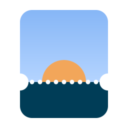
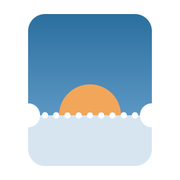
on ice #EEF5FF
1.8:1
on sky #86B6F6
1.0:1
on night #061925
8.8:1
Sits at the same hue as Amazon's orange (#FF9900, 65°), which is part of why the ‘a’ icon read as Amazon. Heavy against the pastel sky.
Soft apricot
#F7B58A · OKLCH hue 54°
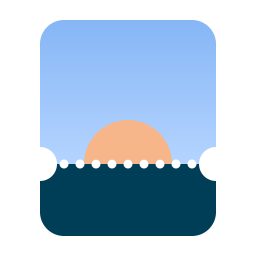
on ice #EEF5FF
1.6:1
on sky #86B6F6
1.2:1
on night #061925
10.2:1
The calmest, and lovely on the night page. But it nearly disappears on ice and on the light end of the sky, so the i-dot and small suns wash out.
Dawn coral
#F08A6C · OKLCH hue 37°
picked
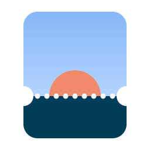
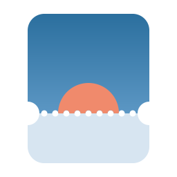
on ice #EEF5FF
2.2:1
on sky #86B6F6
1.2:1
on night #061925
7.3:1
Picked. Its hue sits close to opposite the teal accent (226°), so the two read as a designed pair, and it is far from Amazon's orange. It's the most visible of the three on ice and still soft on night: the colour of low morning light.
Golden sunrise
#F2B84B · OKLCH hue 80°
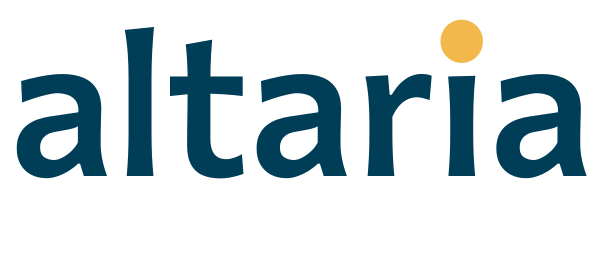
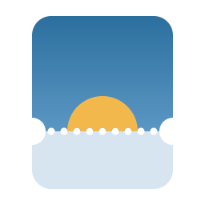
on ice #EEF5FF
1.6:1
on sky #86B6F6
1.2:1
on night #061925
10.0:1
Sunny and bright on night. But it fades on ice and on the sky, and yellow on blue is Ryanair and Lufthansa territory, which is confusing on a flight search.
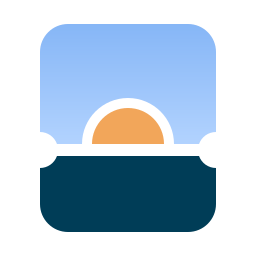
Round 1
BHorizon Ticket: the tear, fixed
“the best and should be kept for a redesign but the tear in the ticket looks placed wrong so it looks off.”
In round 1 the tear was a plain gap in the colour at an arbitrary 60 %, and the sun sat in that gap. It read as a crack, not a tear. Each variant below fixes the tear a different way.
B1
Perforated Horizon
Ticket symbol
Recommended
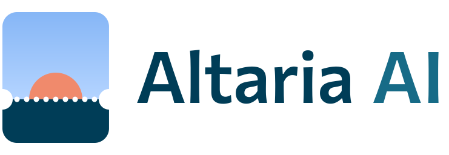
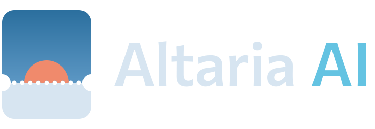
The ticket you liked, with a real tear: punched holes run notch to notch, and the sun rises from them. The tear and the horizon are one deliberate line.
How it answers the note
The tear is a perforation you could tear along, not a colour edge.
It sits at exactly two-thirds (a 2:1 ticket-to-stub split), with the notches centred on it.
The sun is centred on the perforation, and the holes run straight through its base, so it's plainly placed there on purpose.
16 px check
colour
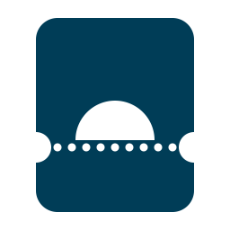
one colour
reversed
One colour and reversed
Risk: At 16 px the holes and notches vanish and it reads as a sunrise tile. The perforation starts to show at 32 px and is clear from 48 px.
Survives a rename: Yes
B2
Boarding Pass
Ticket symbol, landscape
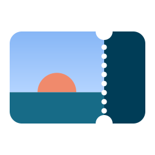
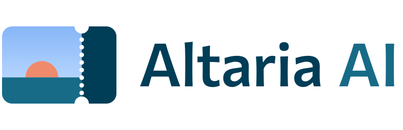
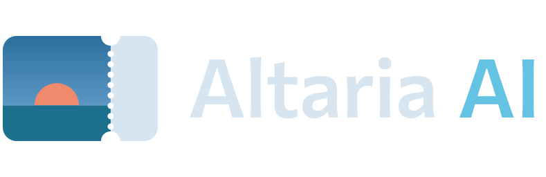
A real boarding pass: the stub sits behind a vertical perforation on the right, and the sunrise happens on the main part.
How it answers the note
The tear runs top to bottom, as on a printed boarding pass, so its place reads as standard, not arbitrary.
The stub is 30 % of the width, notched where the perforation starts and ends.
The horizon runs the other way, so the sun and the tear never touch.
16 px check
colour
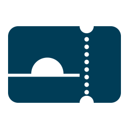
one colour
reversed
One colour and reversed
Risk: Wide (3:2), so it is small inside a square favicon or app tile.
Survives a rename: Yes
B3
Lifted Sun
Ticket symbol
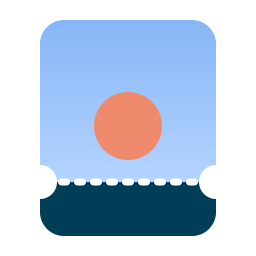
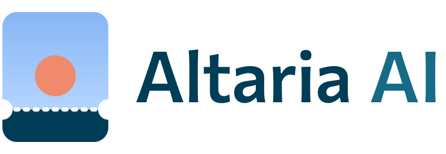
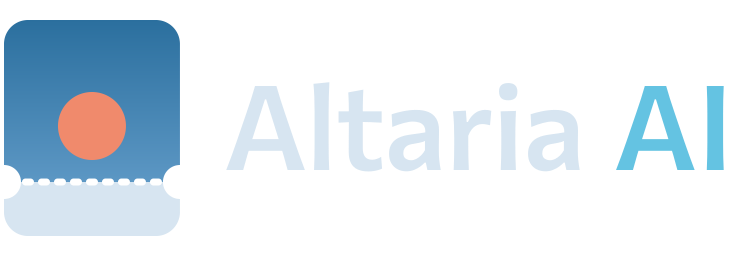
The quietest fix: the sun lifts into the sky as a full disc, and a dashed tear sets off a short stub at the bottom.
How it answers the note
A dashed cut line between the notches, the way tickets mark where to tear.
The tear drops to three-quarters: a 3:1 split with a clearly short stub.
Nothing crosses the tear; the sun has clear sky all round.
16 px check
colour
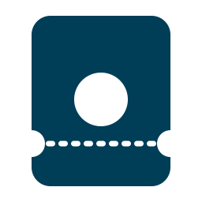
one colour
reversed
One colour and reversed
Risk: Drops the ‘tear is the horizon’ idea. In one colour the sun becomes a round hole, which can read as a lock or a camera.
Survives a rename: Yes
Round 1
DSummit: more mountain, less insignia
“I like the colors but it looks like a logo for a defense company… highlight more of the mountain idea.”
A solid 60° chevron with a hard cut reads as a badge or rank insignia. Round 2 keeps the teals and uses rounded summits, slopes that flatten towards the base, layers and water.
D1
Ridgelines
Layered symbol
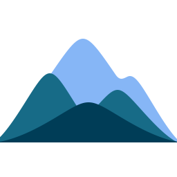
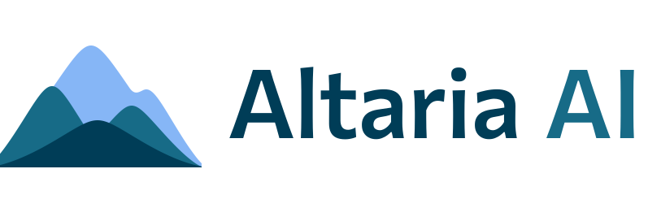
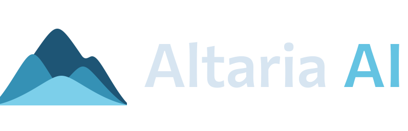
Three soft ridges receding into haze, darkest in front: the long view from a window seat, with the next adventure behind it.
How it answers the note
Rounded summits and slopes that flatten out, instead of a straight chevron.
Depth from atmospheric perspective: ink, teal, then sky blue, the colours you liked.
Asymmetric, like real terrain, with no hard symmetry to read as a badge.
16 px check
colour
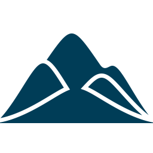
one colour
reversed
One colour and reversed
Risk: Wide and low (about 2:1), so it's small in a square favicon; the layers merge into one silhouette below 24 px.
Survives a rename: Yes
D2
Still Water
Symbol
Best of D
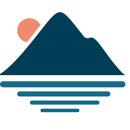
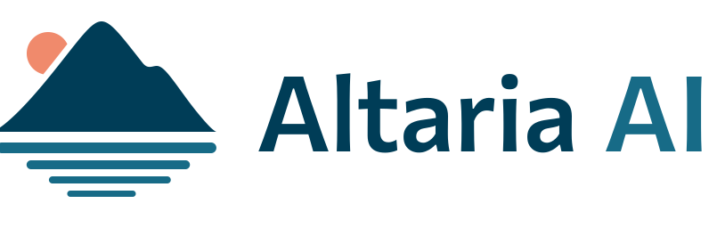
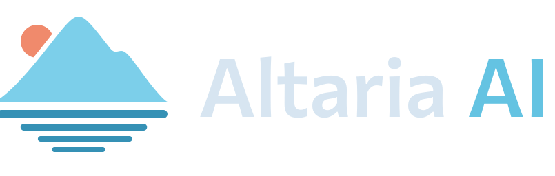
A summit and its reflection in still water, drawn as calm ripples. What you see is what's there, with no distortion: a quiet nod to ‘no ranking bias’.
How it answers the note
One soft, asymmetric summit with a shoulder, not a chevron.
The level waterline and ripples bring the calm the brief asks for.
A small coral sun ties it to the rest of the palette.
16 px check
colour
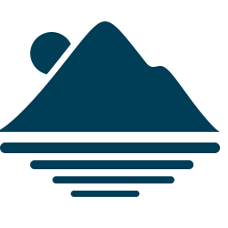
one colour
reversed
One colour and reversed
Risk: Mountain over a lake is a familiar outdoor motif. The ripples fuse into one bar at 16 px.
Survives a rename: Yes
D3
Sunrise Saddle
App tile
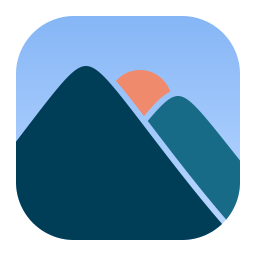
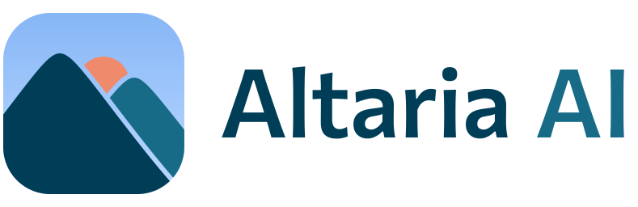
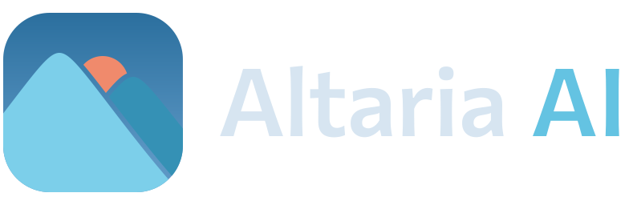
Two soft peaks under the site's sky, with the sun rising in the saddle between them.
How it answers the note
Built as an app tile in the site's sky gradient, so it lives in the same world.
Overlapping peaks with a thin line of sky between them, not one hard point.
The peak meets a sunrise: the sun sits low in the saddle.
16 px check
colour
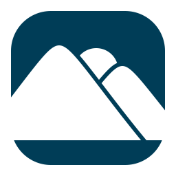
one colour
reversed
One colour and reversed
Risk: Mountain-and-sun tiles are common among outdoor and photo apps. It is most distinct in colour and weakest in one colour.
Survives a rename: Yes
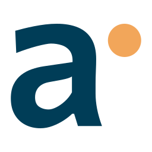
Round 1
EDaybreak wordmark: a new icon
“has a good full logo with the text but the icon is terrible and looks like the amazon logo a bit.”
The wordmark stays: lowercase ‘altaria’ in Commissioner with the i-dot as the sun, now in Dawn coral. A lowercase a with an orange accent is Amazon's territory, so the new icons use only the sun, the horizon and the i.
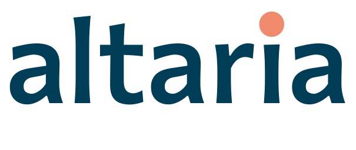
The wordmark, kept from round 1: Commissioner at weight 540 with full flare (FLAR 100), outlined, the i-dot in Dawn coral.
E1
Reflection i
App tile
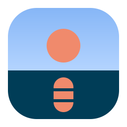
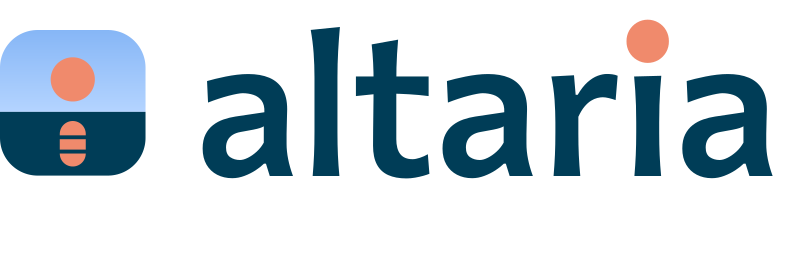
The wordmark's i remade as a sunrise at sea: the dot is the sun, the stem is its reflection, and the horizon sits where the x-height would.
How it answers the note
No letter a and nothing Amazon-like: the i is made of the sun and its reflection, not a typeset letter with a coloured mark.
Comes straight from the wordmark: same sun, same i.
The sky tile matches the site.
16 px check
colour
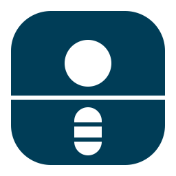
one colour
reversed
One colour and reversed
Risk: In one colour it reduces to an i in a rounded square, which can read as an info icon.
Survives a rename: Icon yes, wordmark no
E2
Calm Water
Open icon
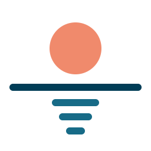
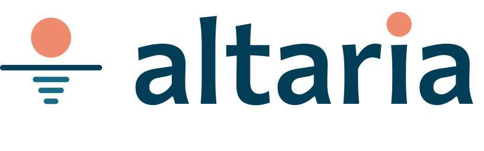
The i-dot sun over a level horizon, its reflection a column of glints: the wordmark's idea with no container.
How it answers the note
No letterform at all.
Works on any background without a tile.
The same sun-and-horizon language as the wordmark.
16 px check
colour
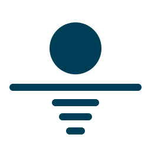
one colourreversed
One colour and reversed
Risk: Sun over water is a familiar travel picture. At 16 px the sun, horizon and glints can read as a small figure.
Survives a rename: Icon yes, wordmark no
E3
Glint Tile
App tile
Best of E
The same sunrise in an app tile: sky above, deep teal sea below, the sun's reflection in three glints.
How it answers the note
The most app-ready of the three; in colour at 16 px it still reads as sun over sea.
More scene than letter, so the info-icon reading is weaker than E1's.
The sky gradient links it to the site.
16 px check
colourone colourreversed
One colour and reversed
Risk: Close to E1, and close in mood to B's ticket. In one colour at 16 px the sun and glints can still pass for an i.
Survives a rename: Icon yes, wordmark no
Recommendation: B1, Perforated Horizon
It keeps the ticket you already picked as the best, fixes the tear in the most direct way, and makes the strongest square app icon. If you'd like the most literal ticket, B2 is the safe alternative.
If you'd rather go with the mountain, take D2 Still Water forward. For the wordmark route, use E3 Glint Tile as its icon.
What these are
Second-round concepts, built as SVG paths with no live text. The curves are finely sampled for now. The chosen direction gets rebuilt with clean arcs, optical tuning, a flat (no-gradient) master and a small-size cut in the final kit.
Before launch
No logo can be cleared here. Run a trademark search and a reverse image search on the chosen mark and name. Commissioner is under the SIL Open Font License, which allows logo use.